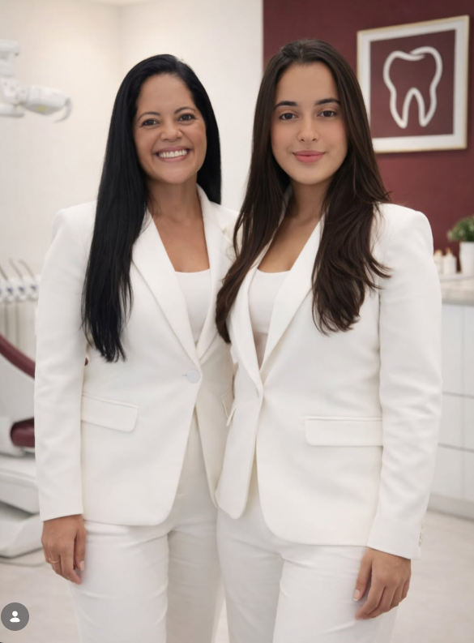

Missão
Promover saúde bucal e bem-estar com atendimento humanizado, ético e personalizado, devolvendo a cada paciente a confiança de sorrir.
Odontologia & Harmonização Orofacial · Parque Mandaqui, São Paulo
Há 26 anos, a Clínica Nakayama une técnica, sensibilidade e atenção a cada detalhe para cuidar da saúde do seu sorriso e valorizar a sua beleza natural.
26
anos de história
3
gerações na saúde
7
áreas de atendimento

Nossa história
Essa história começa antes da clínica. Hisashi Nakayama, o querido Dr. Julinho, como era chamado por seus pacientes, nasceu em Okinawa, no Japão, e veio ainda criança para o Brasil com a família. Aqui, formou-se médico pediatra e neonatologista e dedicou toda a sua vida aos pequenos pacientes. É dele o exemplo de cuidado e amor à profissão que inspira, até hoje, a filha e a neta.
Foi seguindo esse exemplo que a Dra. Jaqueline Nakayama fundou, há 26 anos, a Clínica Nakayama, com o propósito de oferecer uma odontologia próxima, honesta e feita com tempo para ouvir cada paciente. Ao longo dessas mais de duas décadas, famílias inteiras confiaram seus sorrisos aos nossos cuidados.
Hoje, essa história ganha um novo capítulo com a chegada da Dra. Giovanna Nakayama, filha da fundadora e neta do Dr. Julinho, que traz à clínica a harmonização orofacial e um olhar contemporâneo sobre estética e bem-estar.
Três gerações dedicadas à saúde e uma mesma convicção: cada paciente é único, e merece ser tratado assim.
Missão
Promover saúde bucal e bem-estar com atendimento humanizado, ético e personalizado, devolvendo a cada paciente a confiança de sorrir.
Visão
Ser a clínica de confiança das famílias da Zona Norte, unindo a tradição de 26 anos à constante atualização técnica.
Valores
Quem cuida de você
Fundadora · Cirurgiã-Dentista · Clínica Geral · CROSP 74506
Idealizadora da Clínica Nakayama, a Dra. Jaqueline dedica há 26 anos sua carreira à clínica geral, cuidando da saúde bucal de pacientes de todas as idades com experiência, atenção e proximidade. É ela quem acompanha o paciente de forma integral, da prevenção ao planejamento do tratamento, para que cada etapa seja conduzida com segurança e tranquilidade.
@jacknakayamaCirurgiã-Dentista · Harmonização Orofacial · CROSP 176714
Cirurgiã-dentista com atuação em harmonização orofacial, a Dra. Giovanna traz para a Clínica Nakayama um olhar voltado à individualidade, ao equilíbrio e à naturalidade de cada paciente. Seu propósito é valorizar a beleza de forma elegante e personalizada, com procedimentos planejados para respeitar os traços e as características únicas de cada rosto, realçando quem você já é, sem exageros.
@dragiovannanakayamaPara oferecer um cuidado completo, a clínica conta também com uma equipe de especialistas parceiros em Implantodontia, Ortodontia e Endodontia, profissionais altamente qualificados que atendem em dias programados para que você realize todo o seu tratamento em um só lugar.
Tratamentos
Da prevenção à estética, cada tratamento começa com uma avaliação cuidadosa e um plano pensado para você.
Com a Dra. Jaqueline
Consultas de rotina, limpeza, restaurações e acompanhamento contínuo. A base de um sorriso saudável e o ponto de partida de todo tratamento na clínica.
Com a Dra. Giovanna
Procedimentos planejados de forma individual para realçar a beleza natural do rosto, com equilíbrio, elegância e resultados que respeitam os seus traços.
Reposição de dentes perdidos com segurança, devolvendo função, firmeza e estética ao sorriso.
Aparelhos para alinhar os dentes e corrigir a mordida, com opções para crianças, jovens e adultos.
Tratamento de canal realizado em uma única sessão, com conforto e precisão, para preservar o seu dente natural.
Técnicas de consultório e caseiras supervisionadas para um sorriso mais claro, com segurança.
Laminados ultrafinos (facetas) que harmonizam cor, forma e alinhamento, com aparência natural.
Por que a Clínica Nakayama
01
Dentistas e especialistas em constante atualização, trabalhando em conjunto no seu plano de tratamento.
02
Consultas sem pressa, com tempo para ouvir, explicar cada etapa e esclarecer todas as dúvidas.
03
Clínica geral, estética, harmonização e especialidades reunidas, sem precisar procurar outros consultórios.
04
No Parque Mandaqui, próximo à Padaria Flor do Mandaqui, com estacionamento no próprio edifício.
05
Edifício preparado para receber com conforto pessoas com mobilidade reduzida.
06
Protocolos rigorosos de biossegurança e esterilização para a sua tranquilidade.
Localização
Contato
Horário de atendimento
Segunda, terça, quarta e sexta
das 9h às 17h
Sábados: atendimento excepcional, mediante agendamento